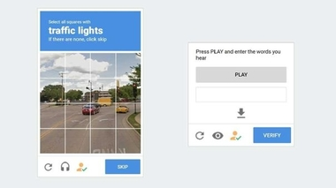

Samantha Daniela Mendoza Núñez
Mi Web Personal
NOTICIAS
¿Adiós a los CAPTCHA? Cloudflare trabaja en un reemplazo para identificar que “no eres un robot”
La compañía Cloudflare ha anunciado un par de alternativas a los famosos CAPTCHA, el sistema de detección de bots en páginas web. Cloudflare, a través de un blog, señala que quiere terminar con los CAPTCHA o la "prueba de Turing pública completamente automatizada para diferenciar a las computadoras de los humanos” a través de llaves físicas o huellas dactilares. Haz clic en los pasos peatonales “En pocas palabras: todos los odiamos”, argumento Cloudfare como principal razón para buscar alternativas al CAPTCHA. Dentro de los problemas reales, señala que se pierde tiempo resolviendo estas pruebas, imposibilita el acceso a personas con alguna discapacidad o juega con contextos distintos como el color de los taxis o las boquillas contra incendios. Por lo mismo, propone, primero una llave criptográfica física, que se conecta con USB. Al acceder a la web, en vez de realizar la prueba CAPTCHA, el usuario valida “que es humano” con la conexión del dispositivo de seguridad sin perder más tiempo que cinco segundos. Por el momento, estas llaves son limitadas, pero se espera que se masifiquen próximamente y lleguen en distintas marcas. En el caso de que ciento de granjas de robots obtengan llaves de seguridad, Cloudfare también quiere que esto se complemente de forma rápida con huellas dactilares. Estos podrían implementarse en laptops o trabajar directamente en móviles, con ya bastantes equipos trabajando de manera convencional con ellos. De momento esta tecnología ya funciona en algunas webs norteamericanas. Si tienes una de las llaves puedes probarlo ahora mismo en la web de prueba que ha preparado Cloudfare.
WhatsApp prepara un “modo desaparición”: ¿Cómo funcionará y por qué lo necesitas?
WhatsApp está preparando un “modo desaparición” para iniciar conversaciones que terminen eliminándose por completo tras cierto tiempo. De acuerdo con WaBetaInfo, la beta de WhatsApp ya está implementando este modo desaparición, el cual espera lanzarse en las versiones públicas de Android y iOS lo más pronto posible. Autodestrucción El modo desaparición es una versión amplia de los mensajes que se autodestruyen que llegaron en noviembre del 2020. WhatsApp señala que este modo permitirá que todos los nuevos chats desaparecerán con sus mensajes incluidos. Eso sí, no señala cuál será su tiempo de duración hasta que se eliminen. A diferencia de los mensajes que se autodestruyen, el modo desaparición no deja huella de los mensajes eliminados, por lo que esfuma todo rastro por completo. Para configurarlo, tendrás que dirigirte a Configuración de WhatsApp > Privacidad > Modo desaparición.